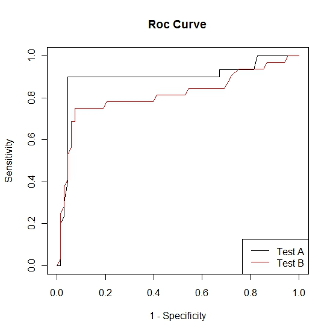
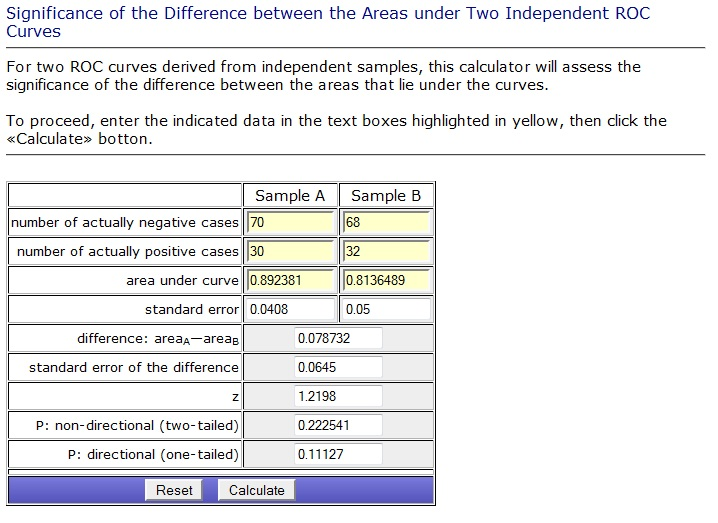

Comparing Classification\Diagnostic Models
Joel is a clinical researcher who has developed two new tests for diagnosing Influenza, call them test A and test B. The current diagnostic test is considered to be a gold standard, that is, it has 100% sensitivity and specificity. While the current method perfectly diagnoses patients with Influenza it cannot distinguish subtype. That is, it doesn't give any information about whether the flu is H1N1, H3, or H5.
The two new diagnostics, through separate mechanisms, have the ability to subtype Influenza. Subtyping has become a crucial part of flu diagnosis largely due to advances in preventive medicine (i.e., vaccinations). Because of this the researcher is willing to lose a bit in both sensitivity and specificity to gain accuracy in subtyping. Suppose that it is known that the two tests are equal in their ability to subtype. Joel is interested in determining which of the two tests is the optimal test with regard to sensitivity and specificity in diagnosing Influenza.
The accuracy of a test can be measured by the area under the ROC curve. Thus we can compare the accuracy of the two new diagnostic tests by comparing the areas under the ROC curves. This can be done by
- Applying the diagnostic tests to two independent random samples
- Applying the diagnostic tests to the same random sample.
Two Independent Random Samples
Suppose that as patients come into Joel's clinic with flu-like symptoms they are randomized into two groups, A and B. Group A will be tested for influenza using the gold standard and test A. Group B will be tested for influenza using the gold standard and test B. The gold standard test has already been established and hence the outcome will be dichotomous, that is, the outcome of the gold standard test will be 0 if the patient tests negative for influenza and 1 if the patient tests positive for influenza. Using the procedure outlined in the ROC curve page we constructed the following two ROC curves.

We know that the test with the largest area under the ROC curve is the preferred diagnostic test. It is clear from the above plot that the area under the ROC curve for test A is larger than the area for test B. Now we need to determine whether or not this difference is statistically significant.
We calculate the area under the curves using the trapezoidal rule. The area under the ROC curve for test A was found to be 0.89 and the area under the ROC curve for test B was found to be 0.81. Following methods described by Hanley and McNeil we can calculate the test statistic and p-value. Vassar College has created a calculator to assess the significance of the difference between the areas under two independent ROC curves. A picture of the calculator is provided below.

From this output we see that there doesn't appear to be a significant difference between the efficacy of the two new diagnostic tests.
One Random Sample
Suppose that as patients come into Joel's clinic with flu-like symptoms they are tested for influenza using test A, test B, and the gold standard. The gold standard test has already been established and hence the outcome will be dichotomous, that is, the outcome of the gold standard test will be 0 if the patient tests negative for influenza and 1 if the patient tests positive for influenza. Using the procedure outlined in the ROC curve page we constructed the following two ROC curves.
Again we calculate the area under the curves using the trapezoidal rule. The area under the ROC curve for test A was found to be 0.89 and the area under the ROC curve for test B was found to be 0.81. Since these tests were carried out on the same individuals the ROC curves are correlated. Hence we need to take this correlation into account and therefore we cannot perform the same procedure as above. When the ROC curves are correlated the procedure becomes more complicated and interested parties should see DeLong et al. for further details.
We note that in the above examples the ROC curve for test A is almost always above the ROC curve for test B. Thus even without a formal statistical test it is clear that test A is the preferred diagnostic. In some situations this may not be the case.
References
Hanley JA, McNeil BJ. The meaning and use of the area under a Receiver Operating Characteristic (ROC) curve. Radiology, 1982, 143, 29-36.
DeLong ER, DeLong DM, Clark-Pearson DL. Comparing the Areas Under Two or More Correlated Receiver Operating Characteristic Curves: A Nonparametric Approach. Biometrics, 1988, 44, 837-845.
http://faculty.vassar.edu/lowry/roc_comp.html
-- ErinEsp - 16 Jan 2011